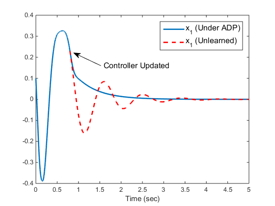
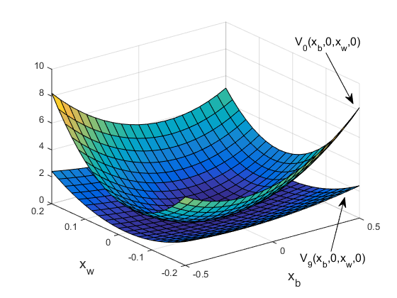
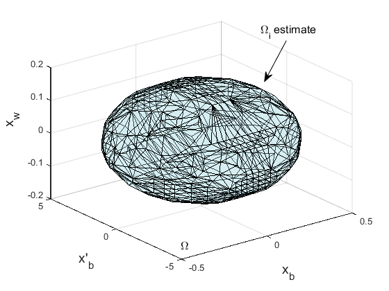

Contents
% Main Script close all PsiPsi = []; PsiU = []; Phi = []; CostQ = []; x_save = []; % Keep track of the states t_save = []; % Keep track of the time currentTime = 0; % Indicating the current time throught the simulation PhiLength = numel(Phi_fun(zeros(1,4))); PsiLength = numel(Psi_fun(zeros(1,4))); r = 1; % Weight on u N = min(80,2*(PsiLength+PsiLength)); IterMax = 20; % Number of iterations X = [0.1,-5,0.2,2,zeros(1,PsiLength^2+PsiLength+1)]; T = 0.01; % Length for each time interval
Online Data Collection
for i = 1:N [t,X] = ode45(@adpSysWrapper, ... [i-1,i]*T, ... [X(end,1:4) zeros(1, PsiLength^2 + PsiLength + 1)]); Phi = [Phi; Phi_fun(X(end,1:4))-Phi_fun(X(1,1:4))]; %#ok<AGROW> PsiPsi = [PsiPsi; X(end,4 + (1:PsiLength^2))]; %#ok<AGROW> PsiU = [PsiU; X(end,4 + PsiLength^2 + (1:PsiLength))]; %#ok<AGROW> CostQ = [CostQ; X(end,end)]; %#ok<AGROW> t_save = [t_save; t(:)]; %#ok<AGROW> x_save = [x_save; X(:,1:4)]; %#ok<AGROW> currentTime = t_save(end); end % Off-Policy Learning. Solve the matrix A*pw = B w = zeros(PsiLength,1); for i = 1:IterMax A = [Phi -2*r*PsiU-2*r*PsiPsi*kron(w,eye(PsiLength))]; % Note: To be consistent with the notations in (Y Jiang & ZP Jiang, % TNNLS 2014), the above line should be replaced with % A = [Phi 2*r*PsiU-2*r*PsiPsi*kron(w,eye(PsiLength))]; % i.e., consider u = w'*phi, not u = -w'*psi % In that case, the simpleSysWrapper should be called as % >> simpleSysWrapper(t,x,-w) B = -(CostQ + PsiPsi*kron(w,w)); pw = A\B; p = pw(1:PhiLength); w = pw(PhiLength+1:end); if i == 1 p0 = p; % save the initial value function else if norm(p-pp) <= 0.01 Iter = i; break end end pp = p; %save the previous p for convergence check end
Post learning
Terminate exploration noise but keep appying the inital gains until the states enters the region of attraction
% Compute the region of attraction D = getRegionOfAttraction(p); % Keep checking if state is in the region of attraction currentStates = x_save(end,:); while ~isInRegionOfAttraction(currentStates,p,D); [t,y] = ode45(@(t,x) simpleSysWrapper(t,x,w*0), ... currentTime+[0,0.1], ... currentStates); t_save = [t_save; t]; x_save = [x_save; y]; currentStates = x_save(end,:); currentTime = t_save(end); end
Update controller and finish the rest of the simulation
[t,y] = ode45(@(t,x) simpleSysWrapper(t,x,-w), ... currentTime+[0,5], ... currentStates); t_save = [t_save t(:)]; x_save = [x_save y(:,1:4)]; % Also compare with unlearned performance [t0,y0] = ode45(@(t,x) simpleSysWrapper(t,x,w*0), ... currentTime+[0,5], ... currentStates);
Plotting results
Create figure folder
if exist('simFigures','dir') == 0 mkdir('simFigures'); end
Figure 1 Time course
figure(1) % subplot(221) plot(t_save,x_save(:,1),t0, y0(:,1), 'r--', 'LineWidth', 2) xlabel('Time (sec)') legend1 = legend('x_1 (Under ADP)', 'x_1 (Unlearned)'); set(legend1,'FontSize',12); xlim([0,5]) % % % subplot(222) % plot(t_save,x_save(:,2),t0, y0(:,2), 'r--', 'LineWidth', 2) % xlabel('Time (sec)') % legend('x_b (Under ADP)', 'd/dt x_b (Unlearned)') % % % subplot(223) % plot(t_save,x_save(:,3),t0, y0(:,3), 'r--', 'LineWidth', 2) % xlabel('Time (sec)') % legend('x_b (Under ADP)', 'x_w (Unlearned)') % % % subplot(224) % plot(t_save,x_save(:,4),t0, y0(:,4), 'r--', 'LineWidth', 2) % xlabel('Time (sec)') % legend('x_b (Under ADP)', 'd/dt x_w (Unlearned)') % Create textarrow annotation('textarrow',[0.366326530612245 0.268112244897959],... [0.681349206349206 0.743253968253969],'String',{'Controller Updated'},... 'FontSize',12); print('.\simFigures\Ch3_ex1_fig1_x','-depsc');
Figure 2
Plot the value function surfaces and compare the inital one and the optimized one
xxb = -0.5:0.05:0.5; xxw = -0.2:0.02:0.2; [XX,YY] = meshgrid(xxb, xxw); VV = zeros(size(XX)); VV0 = VV; for i = 1:numel(XX) VV0(i) = p0'*Phi_fun([XX(i),0,YY(i),0])'; VV(i) = p'*Phi_fun([XX(i),0,YY(i),0])'; end figure(2) surf(XX,YY,VV0) hold on surf(XX,YY,VV) hold off xlabel('x_b', 'FontSize', 14); ylabel('x_w', 'FontSize', 14); % Create textarrow annotation('textarrow',[0.821428571428571 0.889285714285713],... [0.821759259259259 0.652380952380954],'String','V_0(x_b,0,x_w,0)',... 'FontSize',12); % Create textarrow annotation('textarrow',[0.833928571428571 0.868148148148148],... [0.157142857142857 0.336798336798337],'String', ... ['V_' num2str(Iter-1) '(x_b,0,x_w,0)'],... 'FontSize',12); print('.\simFigures\Ch3_ex1_fig2_v','-depsc')
Figure 3 -- Region of Attraction
Note: This section will be skipped if you are running an order version of MATLAB which does not have the function delaunayTriangulation
SkipSection = false; try delaunayTriangulation; catch e if strcmp(e.identifier, 'MATLAB:UndefinedFunction'); SkipSection = true; warning(['The Region of attraction will not be plotted because', ... ' MATLAB version is too old']) end end if SkipSection == false indexToRemove = []; xxb = linspace(-0.5,0.5,30); xxw = linspace(-0.2,0.2,30); xxdb = linspace(-5,5,30); [XX,YY,ZZ] = meshgrid(xxb, xxdb, xxw); for i = 1:numel(XX) if ~isInRegionOfAttraction([XX(i) YY(i) ZZ(i) 0],p,D) indexToRemove = [indexToRemove i]; end end XX(indexToRemove) = []; YY(indexToRemove) = []; ZZ(indexToRemove) = []; DT = delaunayTriangulation(XX(:),YY(:),ZZ(:)); figure(3) k = convexHull(DT); faceColor = [0.6875 0.8750 0.8984]; trisurf(k,DT.Points(:,1),DT.Points(:,2),DT.Points(:,3), ... 'FaceColor', faceColor, ... %'EdgeAlpha', 0.2, ... 'FaceAlpha', 0.3) xlim([-0.5 0.5]) ylim([-5 5]) zlim([-0.2 0.2]) % Create textbox annotation('textbox',... [0.453 0.168 0.07 0.017],... 'String','\Omega',... 'LineStyle','none',... 'FontSize',12,... 'FitBoxToText','off'); % Create textarrow annotation('textarrow',[0.735714285714286 0.68],... [0.85952380952381 0.72],'String',{ '\Omega_i estimate'},'FontSize',12); xlabel('x_b', 'FontSize', 14); ylabel('x''_b', 'FontSize', 14); zlabel('x_w', 'FontSize', 14); print('.\simFigures\Ch3_ex1_fig3_Omega','-depsc') end
Save Numerical Results and Clean Up
Uncomment the following code to save data
% if exist('simResults','dir') == 0 % mkdir('simResults') % end % save .\simResults\simResults.mat